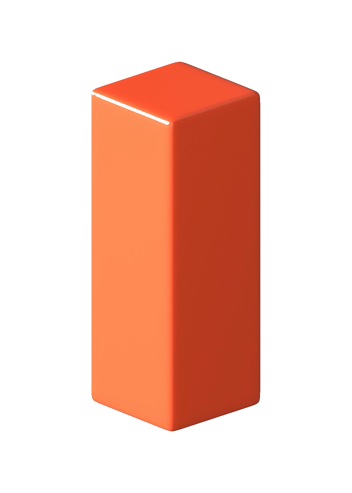

Virtual MeasurementHow does it work? Every press plays out the rest of the regular season and the playoffs, with real randomness. Hover a game for its scoring, click it for the box score.
Title odds · top 5 by conference
How these numbers work
1. Title odds (the favorites and top-5 lists)
For every team, the question is: how did past teams in a similar spot finish? Three views are blended to estimate each team's chance to make the playoffs and to reach the Super Bowl:
| Piece | Weight | What it looks at |
|---|---|---|
| Record | 50% | Every past team (since 1999) with the same record after the same number of games, e.g. all 5-0 teams, and how far they went. |
| Stat look-alikes | 30% | The 40 past teams whose stats looked most like this team's at the same point in the season. Closer matches count more. |
| Archetypes | 20% | How past teams wearing the same ◆ archetypes (Contender, Ball hawks, Air raid…) finished. |
| ⚔ Counters | ±15% max | A nudge for the unit-vs-unit edges a team holds (or gives up) against the rest of the league. |
Small samples are pulled toward the league average (a past 10-0 team that won it all doesn't make every 10-0 team a lock). Then the odds are scaled so the league adds up: 14 playoff teams, 2 Super Bowl teams.
Winning it all is then figured from reaching it, so the two always agree:
That one game is close to a coin flip, tilted by point margin (points scored vs allowed, compared with the league): a team with a much better margin than the other conference's likely representative wins it more often. Finally the title odds are scaled so all 32 teams add up to 100%.
Does it work? Tested on every season from 2008 to 2025, each using only seasons before it. After 10 games, the eventual champion was ranked about 5th on average and was in the top 5 in 10 of 18 seasons, getting about 8% odds on average, 2½ times a blind guess (3.1%). Record turned out to be the strongest single clue, which is why it carries half the weight. It's a fun estimate, not a forecast to bet on: champions like the 2011 Giants (6-4) or 2019 Chiefs (6-4) came from well down the list.
2. The simulator (the bracket)
- Finish the regular season. Every remaining game is played out, and each team's score is drawn separately: its offense (points scored per game) against the other team's defense (points allowed per game), both pulled 30% toward the league average because five games of results run hot. Expected points = the average of those two, so a great offense against a bad defense expects a lot. The home team gets +1.5 points, and each team's score swings about ±9.5 points from expectations, so upsets happen. A tie goes to overtime, where the team expected to score more is likelier to kick the winning field goal.
- Who scores. Each score is broken into touchdowns, field goals, extra points (and the rare safety), in a mix that looks like real games. Touchdowns are credited to real players from this season's stats: the run/pass split follows the team's own rushing vs passing TDs, rushing TDs go to ball carriers weighted by their rushing TDs and share of carries, passing TDs are thrown by the team's main QB to receivers weighted by their receiving TDs and share of targets, and field goals go to the team's kicker. So a team's lead back really does score most often. About 1 touchdown in 15 belongs to the defense or a return man: pick-sixes go to defenders weighted by interceptions and passes defensed, fumble returns by forced fumbles, and return TDs to the team's return men. Some touchdowns come with a failed extra point or a 2-point try.
- How the game unfolds. The scoring plays are put in an order that reads like real football. A team doesn't kick a late field goal while it still needs a touchdown, nobody goes for 2 without a reason, and a game that went to overtime is tied after regulation and ends on a walk-off field goal. Plays get quarters and a game clock. The score that put the winner ahead for good in the 4th quarter of a one-score game is marked as a 🏁 game-winning drive, and comebacks from 10+ down are called out. Teams only go for 2 where the chart says to (down 2, 5 or 10, or up 1 or 5 right after the TD), and kickoff returns only happen right after the other team scores or on the opening or second-half kickoff. Who plays comes from the real NFL injury report: Out players miss a recovery time drawn from typical timelines for their injury (minus games already missed), Questionable and Doubtful players get a chance to play, and an injured starting QB takes his job back when healthy. Only the starting QB runs the ball. The Super Bowl MVP is voted from the winner's box score: QBs get yards, touchdowns and a head start, backs and receivers need a big yardage and TD day, and a defender needs two takeaways or a pile of sacks. Hover any bracket game for its scoring summary.
- Extras. Click any bracket game for a 📦 box score: passing, rushing, receiving, kicking and defense lines built around the scoring plays (a receiver who caught 2 TDs has at least 2 catches, receiving yards add up to the QB's passing yards) using each player's season rates; more points means more yards. With 🚑 Injuries on, after every game each team's starting QB (1.2%) and top playmaker (1.5%) can be lost for the season: a backup QB costs 5 points a game, a missing playmaker 1.5, and they stop scoring. 🗯 Callouts under the champion fire when a sim lands on a meme (the Bills lose in January, the Chargers blow a lead, a wild card wins it all). 🍿 Suspense mode reveals the Super Bowl one score at a time. 🌦️ Weather & venue: playoff games are played at the higher seed's stadium in January. Domes and fixed roofs are 72° indoors; outdoor games draw a temperature from that city's typical January (Green Bay ~18°, Miami ~70°) plus snow, rain or wind. Bad weather takes 1–3 points off both offenses and leans the scoring toward the run, and dome or warm-weather teams lose 1.5 more points visiting a cold (under 35°) stadium. The Super Bowl is at SoFi Stadium (indoors). 🎯 Pick your bracket lets you pick every playoff winner round by round, scored at the end. 🔁 Run it back replays the Super Bowl with the same teams as a series. 🏅 Season awards project each player's stats so far plus the rest of the season at a cooled-off pace (hot starts regress, TDs and takeaways most) with some luck: MVP goes to a QB on a 10+ win team when there is one, Coach of the Year to the biggest improvement, Flop of the Year to the biggest drop from a 10+ win season. 📊 Simulate 1,000 seasons runs everything 1,000 times and shows how often each team makes the playoffs, reaches and wins the Super Bowl, next to the title-odds estimate.
- Seed the playoffs. In each conference, the four division winners are seeds 1–4 by record, and the next three best records are wild cards (5–7). Ties go to point differential, then a coin flip (simpler than the NFL's real tiebreakers).
- Play the bracket. Wild Card: 2 v 7, 3 v 6, 4 v 5 (the 1 seed rests). Divisional: the 1 seed hosts the lowest seed left. Then the conference championships and the Super Bowl (neutral field). Same game model as above.
The simulator and the title odds are two different methods, so they won't match exactly. The sim tends to favor current leaders more, because a hot start also earns a bye and home games when the playoffs are actually played out.